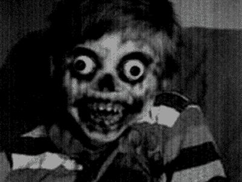

Ragazzo brutto
C'era una bellissima giovane donna che aveva sempre sognato di essere una modella. Dopo aver terminato l'università, ha trovato lavoro nel settore della moda, modellando abiti per riviste di stile. Mentre la sua carriera progrediva, ha fatto molti servizi fotografici in una varietà di paesi esotici.
In uno di questi servizi fotografici, è stata abbinata a un modello maschile molto bello. Erano entrambi molto attratti l'un l'altro e, una notte, si baciarono. Ben presto, la coppia bella e bella iniziò a uscire e gradualmente si innamorarono.
Dopo cinque anni, decisero di sposarsi. Al matrimonio, tutti si sono complimentati con loro, dicendo loro che hanno fatto una coppia meravigliosa. Alcuni ospiti dissero che erano così belli che i loro figli sarebbero stati sicuramente belli. In poco tempo, la moglie era incinta e la coppia felice non vedeva l'ora di iniziare una famiglia e trascorrere una vita meravigliosa insieme.
Tuttavia, quando il bambino è nato, la coppia era inorridita. Era il bambino più brutto che qualcuno avesse mai visto. I dottori e le infermiere erano senza parole. Non potevano nemmeno sopportare di guardare il bambino. La madre e il padre dovettero fermarsi dal vomitare ogni volta che scorgevano la faccia inquietante del loro bambino.
Con il passare degli anni, il bambino cresceva e la sua faccia diventava sempre più brutta. Gli occhi gli si spalancarono, il naso era deformato e la pelle intorno alla bocca stava marcendo. Quando aveva 3 anni, era orribile e i suoi genitori tenevano nascosto il bambino nella sua camera da letto. Non gli hanno mai permesso di uscire di casa e si sono rifiutati di lasciare che i loro parenti, amici e vicini lo guardassero. La bella coppia si vergognava di aver dato alla luce un bambino con una faccia così ripugnante e mostruosa.
La fatica di avere un bambino così brutto ha pesato sul loro matrimonio. La coppia passava la maggior parte del tempo a litigare e litigare. Intrappolata in casa ogni giorno con il suo orribile figlio, la moglie cominciò a perdere la testa. Ogni volta che guardava fuori dalla finestra, vedeva altri bambini giocare allegri insieme ed era piena di risentimento. La sua mente squilibrata cominciò a sviluppare intenzioni omicide.
La fatica di avere un bambino così brutto ha pesato sul loro matrimonio. La coppia passava la maggior parte del tempo a litigare e litigare. Intrappolata in casa ogni giorno con il suo orribile figlio, la moglie cominciò a perdere la testa. Ogni volta che guardava fuori dalla finestra, vedeva altri bambini giocare allegri insieme ed era piena di risentimento. La sua mente squilibrata cominciò a sviluppare intenzioni omicide.
Il loro brutto figlio ha detto che doveva andare in bagno. La madre gli disse di fare la pipì oltre il bordo della scogliera. Quando il ragazzo fu vicino al bordo, tirò giù la cerniera. All'improvviso, sua madre allungò una mano e lo spinse giù dalla scogliera.
Il padre era inorridito, ma poi una strana occhiata passò tra la coppia sposata. Sembrava capire cosa aveva fatto. Senza dire una parola, i genitori impacchettarono il cestino da picnic e la coperta e tornarono a casa. Si erano finalmente sbarazzati del brutto ragazzo. Quando i loro vicini hanno chiesto loro del loro figlio, hanno semplicemente detto che era morto dopo una lunga malattia.
Un anno dopo, la moglie rimase incinta di nuovo. Inizialmente, la coppia era preoccupata che sarebbero stati maledetti con un altro brutto figlio. Tuttavia, le loro paure si sono rivelate infondate, perché quando è nato il bambino sono stati felici di scoprire che si trattava di una bellissima bambina. La bambina sembrava proprio come i suoi genitori. A differenza del loro primo figlio, i genitori amavano e nutrivano la loro bambina. Erano così orgogliosi di lei che l'hanno mostrata ai loro amici e ai vicini. La famiglia trascorse molti anni felici insieme.
Il tempo passò e la bambina aveva quattro anni, disse ai suoi genitori che voleva andare in barca per il suo compleanno. Il giorno in cui ha compiuto quattro anni, i genitori sono andati al lago vicino con la loro amata figlia. La giornata era molto soleggiata e loro noleggiarono una barca e salparono attraverso le placide acque.
They were in the middle of the lake when the girl said, “Mommy, I need to pee.”
La madre aiutò la bambina a togliersi le mutandine. Dopo aver controllato che nessuno stava guardando, sollevò sua figlia e la tenne oltre il bordo della barca in modo che potesse andare in bagno.
La bambina guardò suo padre e disse: "Non lasciare che la mamma mi lasci cadere questa volta".

(Recuerda que las respuestas deben escribirse en italiano)
Inviare
Ritorno